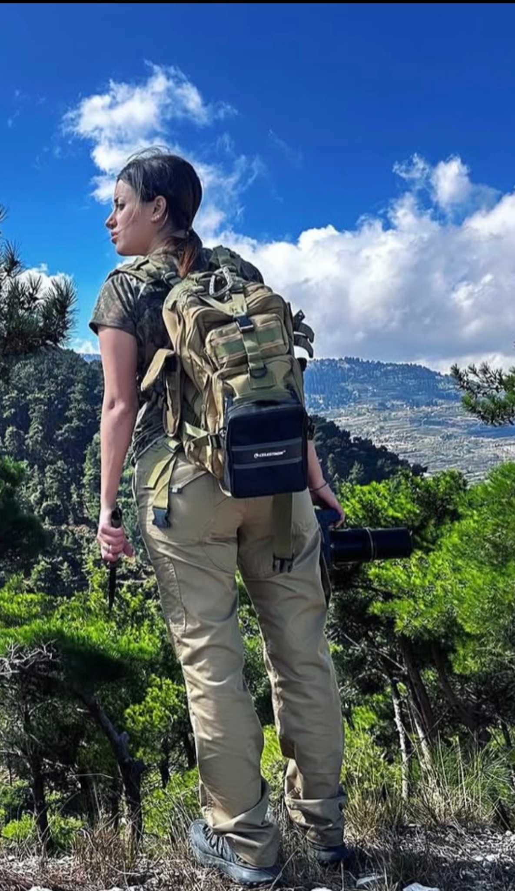
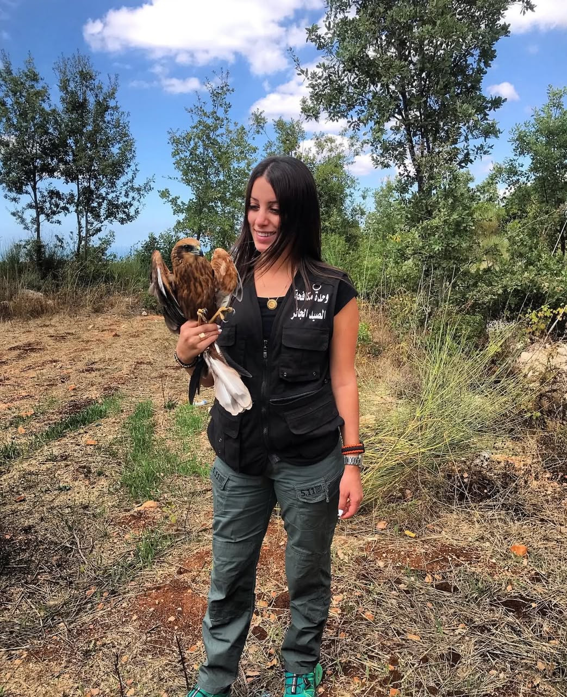
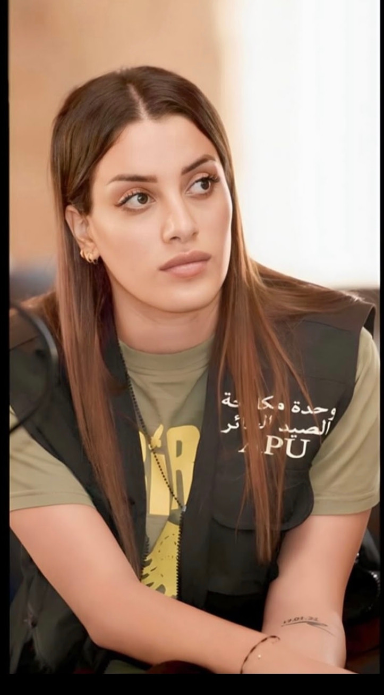
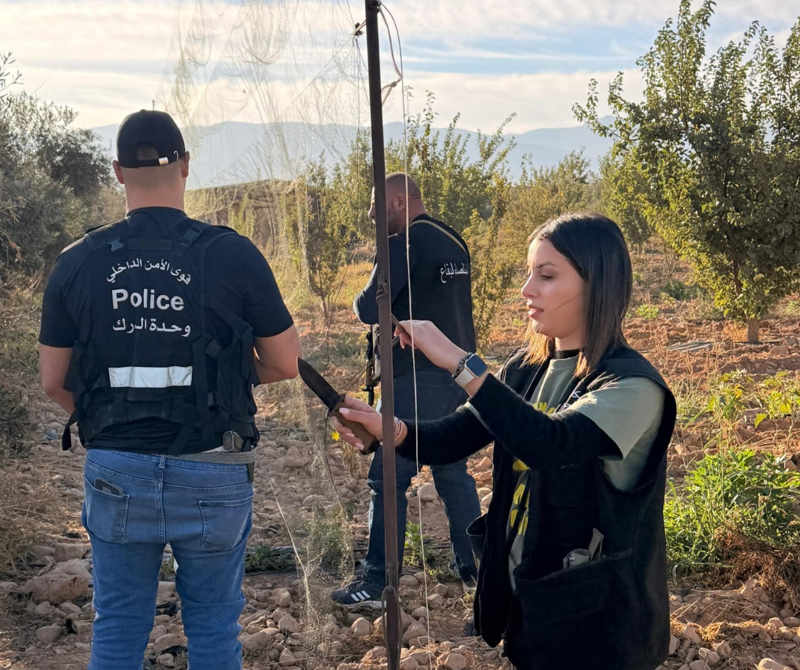
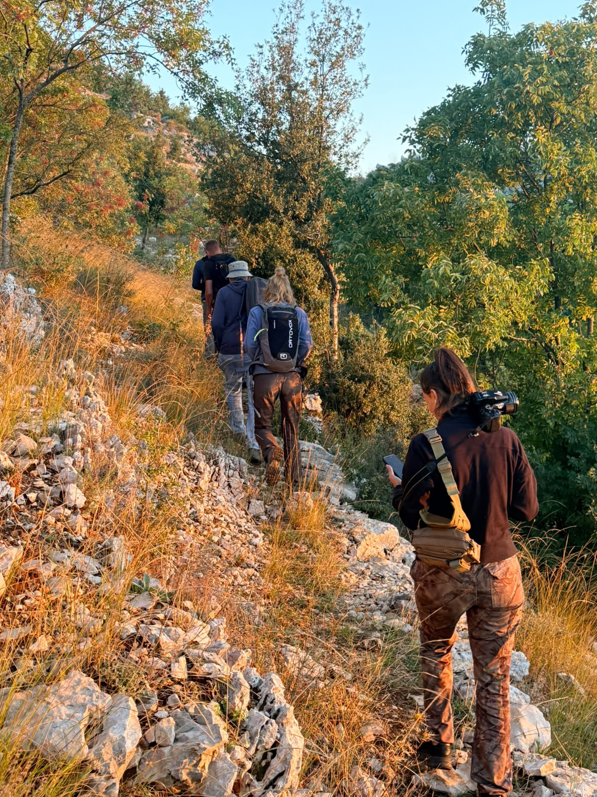
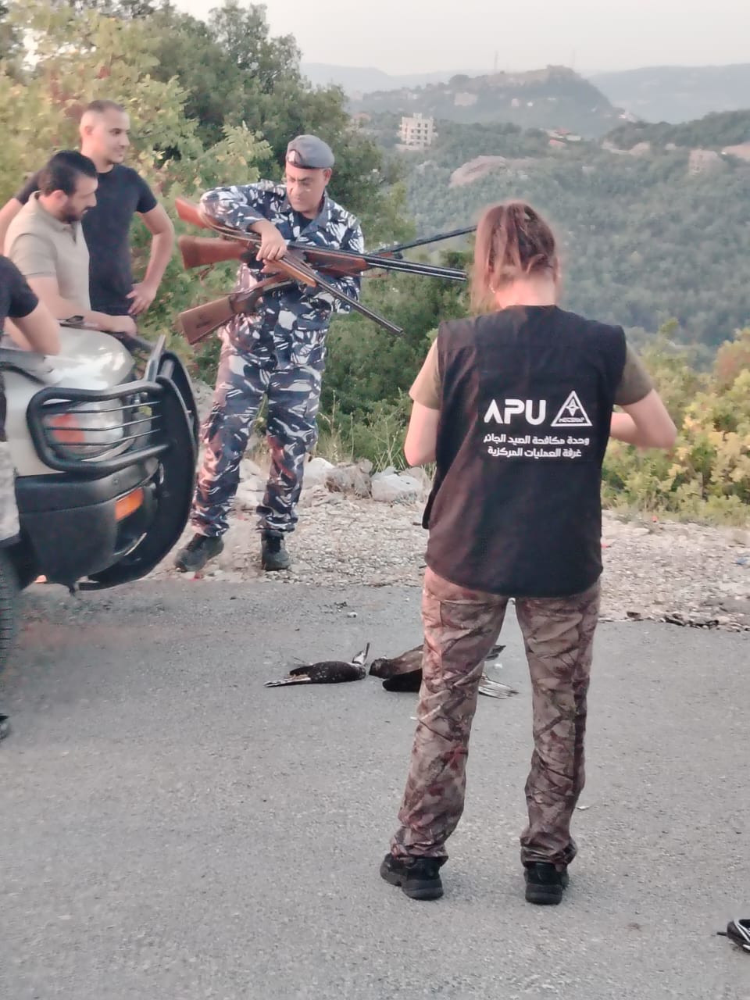

She loves hunting and considers it part of her identity. But when the choice is between a hunting trip and a mission to rescue a bird, she chooses anti-poaching work. The director of the Anti-Poaching Unit (APU) tells Sayd about the moments from the field that stay with her: a wing trapped beneath a stone, a stork resting its head on her hand, and a kestrel that regained its sight and its freedom.
One of the honey buzzard’s wings was injured; a stone pinned down the other, preventing it from escaping. When Shireen Bou Rafoul found it in the field, it was trying to pull its wing out from beneath the stone to free itself. That struggle stayed with her, becoming one of the scenes she recalls whenever she thinks back to her beginnings in bird protection.
Shireen did not come to this work out of opposition to hunting. She was a hunter, and still says: “I really, really love hunting. It’s part of my identity.” But between the hunting she loves and a bird left injured and trapped, she found a line she chose to draw.
She began taking part in the activities of the Middle East Center for Sustainable Hunting and Anti-Poaching (MECSHAP) and felt she belonged there. She volunteered to lead the Anti-Poaching Unit (APU). The work gradually took up more space in her life until it became, in her words, “an inseparable part” of it.
From one valley to the next, Shireen travels on anti-poaching missions throughout Lebanon, without exception: from north to south, from the Bekaa to the mountains and the coast.
While some hunting offenders complain about Shireen and her work in the field, many hunters committed to sustainable hunting support her, reporting violations or injured birds they find. Between the offenders’ complaints and these hunters’ support, she carries on with her missions, taking with her stories that do not end when the patrol is over.


A stork’s head on her hand
There is another encounter she cannot forget. The unit’s veterinarian was operating on a stork’s wing, which Shireen was holding steady. The bird turned its neck and rested its head on her hand.
“It couldn’t do anything except rest its head on my hand,” she says, recalling the moment as she experienced it. She remembers the effect of that gesture: an injured bird, a wing in the veterinarian’s hands, and a head coming to rest on her own hand.
Since then, the suffering of birds wounded by gunfire has felt closer to her. Protection was no longer an abstract idea; it became bound up with birds she had held and helped treat, and others the team could not save.
A kestrel with its eyes sewn shut
During a campaign this autumn, Shireen faced another scene of cruelty. According to her account, the team came across someone using a kestrel to lure a peregrine falcon. The kestrel’s eyes had been sewn shut.
The kestrel was alive and flapping its wings, deprived of sight so it could be used as bait. Shireen can find no words to soften the brutality of what she saw: “Can you imagine someone sewing your eyes shut while you’re alive?”
The team took the bird and removed the thread. As she recounts it, the kestrel needed some time to regain its sight before it was released and took flight again.
This time, the story ended in freedom. But fieldwork does not offer those who do it the same ending every time.

A peregrine they could not save
While on patrol, her colleagues found a peregrine falcon in critical condition. To give it the most carefully informed treatment possible, Shireen says the team contacted a falcon hospital in the United Arab Emirates and sent X-rays.
According to her account of the consultation, the fractures were severe, and the possibility of poisoning from lead in its body was also raised. Hope remained, and attempts to save it continued, but it died.
“We were all upset,” she says. It was not the first time a bird had arrived with injuries beyond the ability of those trying to save it.
Yet the loss did not make them give up. She says it strengthened their determination to protect whatever they could, before an injury became another story without a happy ending.
When hunters and bird protectors work together

During hunting seasons especially, Shireen receives calls and complaints at all hours and sets off with her assistants on urgent missions to rescue injured birds or free captive birds of prey. She calls on the security forces for missions that require their presence.
Many photographs document her alongside security personnel as they address hunting violations, draw up official reports and confiscate hunting guns. She accompanied them on the latest campaign, which included the removal of more than 38,000 square metres of nets used to kill birds.


Shireen praises the readiness and rapid response of Internal Security Forces personnel, considering their presence crucial to completing the missions. She also describes cooperation with the Committee Against Bird Slaughter (CABS) as one of the foundations of the work’s success. She finds particular significance in an organisation dedicated to combating the killing of birds working alongside a centre rooted in sustainable hunting.

For her, this is not a confrontation between every hunter and every defender of birds. She sees proof in people who once committed serious violations and now help protect birds, report offences and raise awareness.
These changes give her more hope than any general talk about the possibility of change.
War and the hardest question
The hardest thing she faced this year did not concern a bird alone. During the war, confronted with destroyed homes, families losing their loved ones and children dying, Shireen found herself questioning her ability to carry on with the work.
How could she rush out into the field to protect birds while family and friends were suffering and she was unable to stop what was happening to them?
She recounts how the team tried to help however it could. After conditions grew relatively calmer, she returned to her mission. This did not mean forgetting people’s suffering, but returning to what she could do: “If everyone does their part, everything falls into place.”
Shireen does not sum up the reality of illegal hunting with a single verdict. She sees violations declining in some places and changing form in others, and observes that financial pressures are pushing some practices towards trade. She understands the difficult circumstances, but does not see them as a justification for poaching.
Nor does the work end at nightfall. She speaks of patrols and joint missions to combat illegal night hunting, of awareness-raising and of offenders being arrested by the competent authorities.
As for a hunting trip she might want to take herself, that remains possible when she is sure no other mission is waiting for her. When the two choices coincide, she does not hesitate: “I definitely prefer and choose anti-poaching work.”
From the honey buzzard beneath the stone to the kestrel that could see and fly again, hunting has taken on another dimension in Shireen’s life: knowing when to go into the field, not to return with a bird, but to let it return to the sky.
Photos: Anti-Poaching Unit (APU)